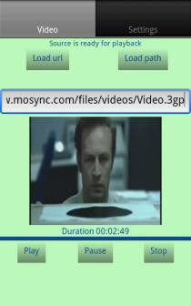
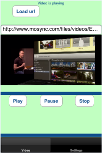
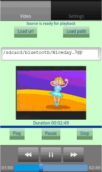

VideoNativeUIExample
This example application makes use of the MoSync NativeUI Library and demonstrates how to use the VideoView widget to embed video in your application.
|  |  |  |
| On Android, playing a .3gp video from a URL | On iOS, playing a .m3u8 video from a URL | On Android, playing a .3gp video from a local path |
This example is included in the MoSync SDK installation in the /examples folder. For information on importing the examples into your workspace, see Importing the Examples.
Behaviour
On iOS and Android:
When it starts up, this application displays a main screen with two tabs, Video and Settings.
On the default Video tab the user can enter the URL of a video file -- of any Android or iPhone/iOS supported formats . (A default URL is provided at start-up, based on the application settings.)
Tapping Load url fetches the file. Tapping Play starts the video.
The settings on the Settings tab enables the user to show or hide the label that displays the video duration, and also the default URL that is loaded when the application starts-up. Pressing Reload returns to the video screen and starts loading the default video.
While a video is playing the user is granted control and the Pause and Stop buttons can be used. After tapping on the video, the platform-specific media controller is displayed.
When loading a new video, any playing video is stopped automatically before the new video plays.
On Android only:
The user can play a local file by entering a local path in the edit box and clicking the Load path button.
In the Code
This example application makes use of the MoSync NativeUI Library, and through that the VideoView widget in the MoSync Widget API.
The project is divided into several files:
- Main.cpp is the application's main entry point.
- Moblet.cpp is the moblet that manages the application and handles key events.
- Util.cpp contains utility functions and values for the application.
- MainScreen.cpp is the TabScreen of the application. Here the application screens are created and connected to the main tab screen.
- VideoScreen.cpp is the first screen of the application, containing widget controls for the Video: Play, Pause, and Stop, and a edit box widget for user input with the source link/path for the video.
- SettingsScreen.cpp is the second screen of the application and it consists of a ListView with a check box for enabling/disabling the duration label of the VideoScreen, a label with the default source url loaded at application startup, and a Reload button for reloading the default source in the VideoScreen.
- .h header files contain the forward declarations for the main .cpp code files.
Touch responses
- The application is exited by pressing the back button.
- The current video source starts playback by pressing Play button.
- The current video source pauses playback by pressing Pause button.
- The current video source stops playback by pressing Stop button.
- The SettingsScreen is shown by pressing on the Settings tab.
- The VideoScreen is shown by pressing on the Video tab.
- By clicking on the edit box from VideoScreen a virtual keyboard is displayed and the user can input a video url, or a video path.
- By clicking LoadUrl button the video url is taken from the edit box and it starts loading.
- By clicking the LoadPath button the video path is taken from the edit box and it starts loading.
- By clicking the "Reload default source" from SettingsScreen, the default video starts loading in the VideoScreen.